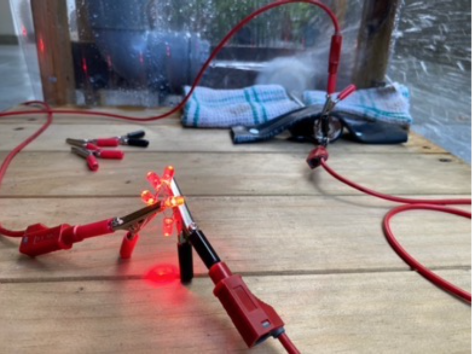
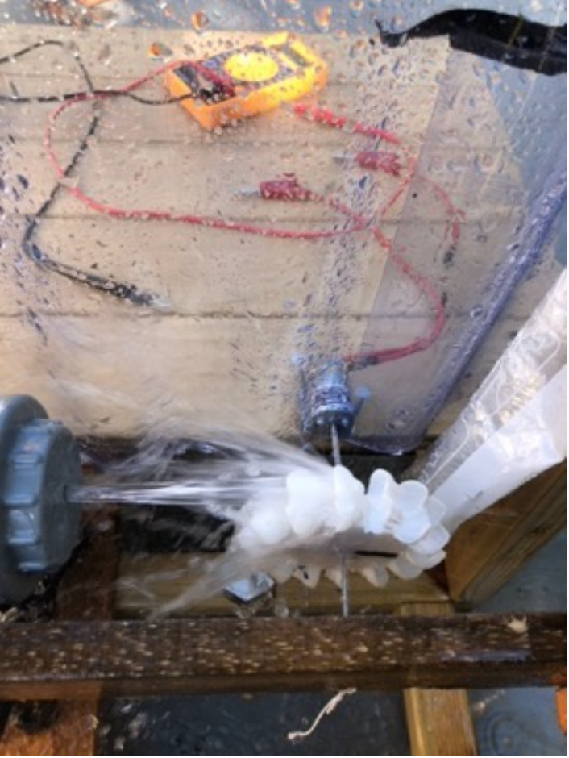
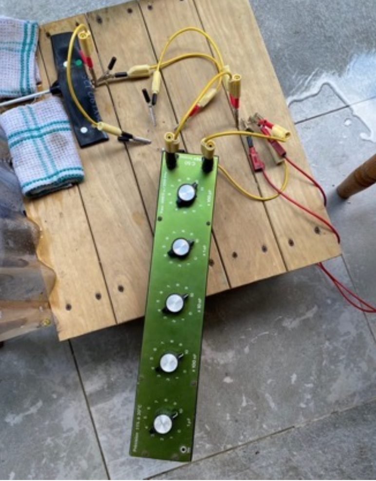

Accueil
À Propos
Formation
Expérience
Contact
Retour
Lycée Jules Garnier - Nouméa (Nouvelle-Calédonie)
TIPE - Travail d'Initiative Personnelle Encadré
Récupération de l'énergie pluviale des villes
Elaboration d'un modèle théorique pour concevoir un système expérimental
Etude expérimentale et numérique à comparer au modèle théorique
Optimisation d'un circuit électronique pour récupérer de l'électricité
  
Rapport de TIPE